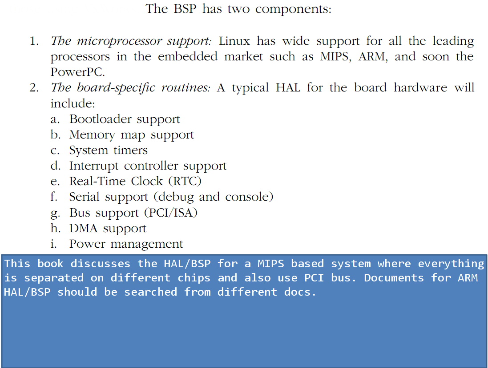
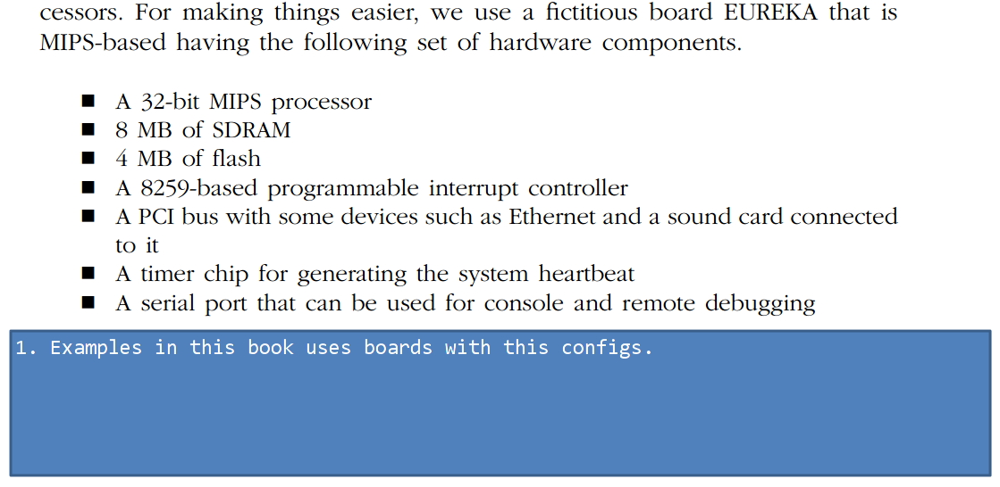
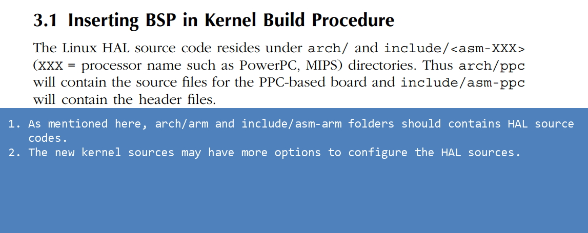
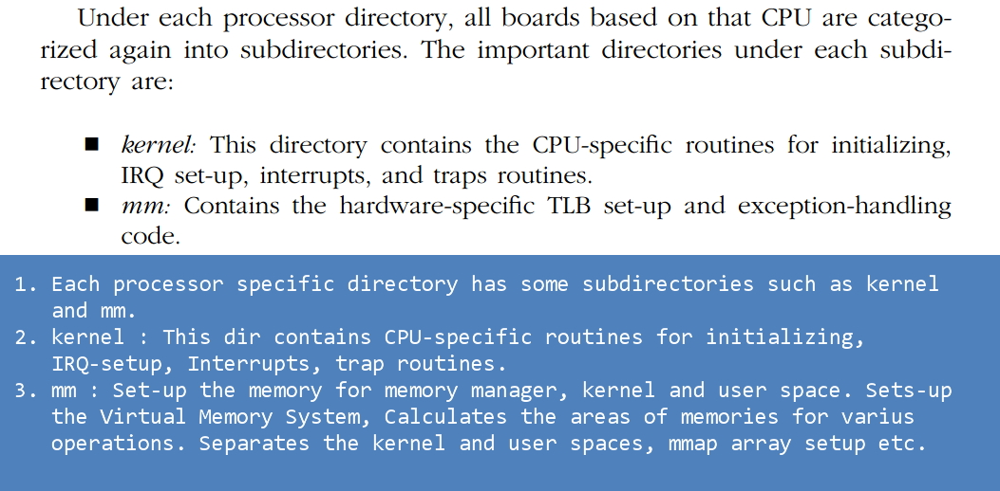
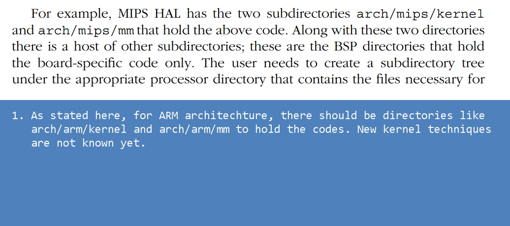
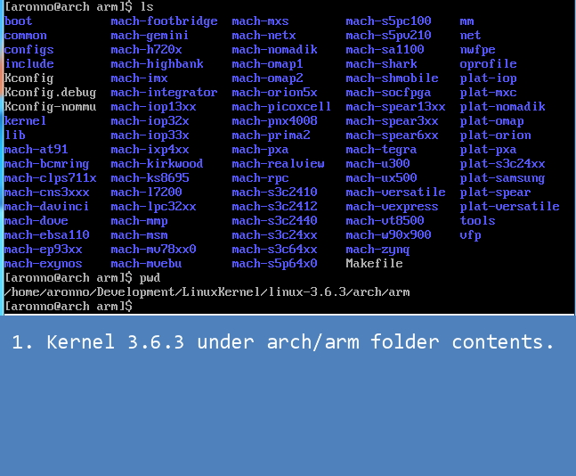
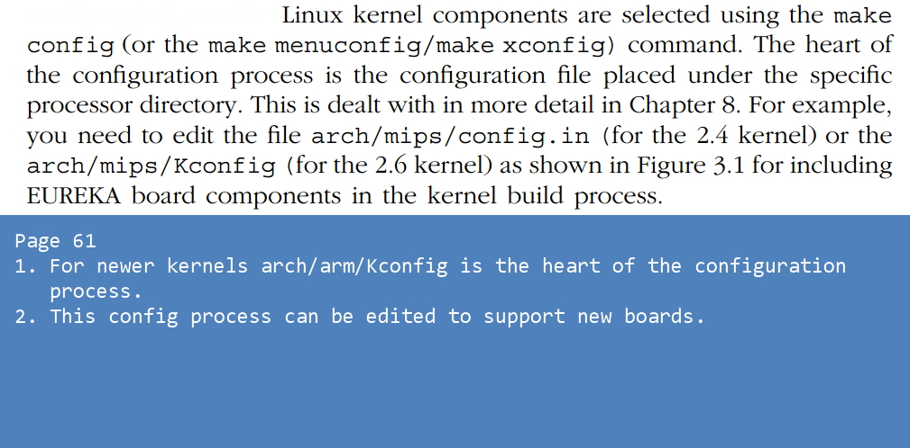
This page has some description about configuring MIPS based Eureka board. How to configure during
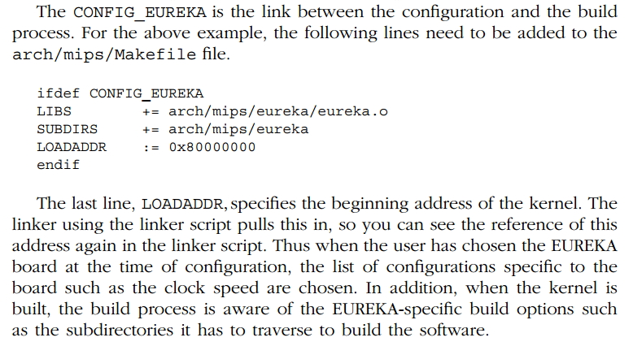
Boot Loader.
POST = Power On Self Test.
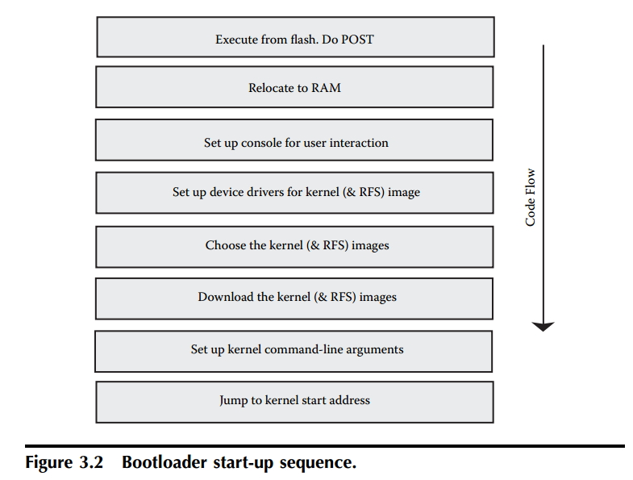
Discussion about various boot loader capabilities as follows:
1.
2.
3.
4.
5.
6.
7.
Bootloader can pass various information to kernel after kernel image has been loaded and when jumping to kernel entry point. The book is calling it Bootloader to Kernel interface. The options are:
1.
Bootloader can pass argument to the kernel in a specific form. The kernel can take the argument for itself or pass it to appropriate module/driver. After system start-up, the argument can be seen from
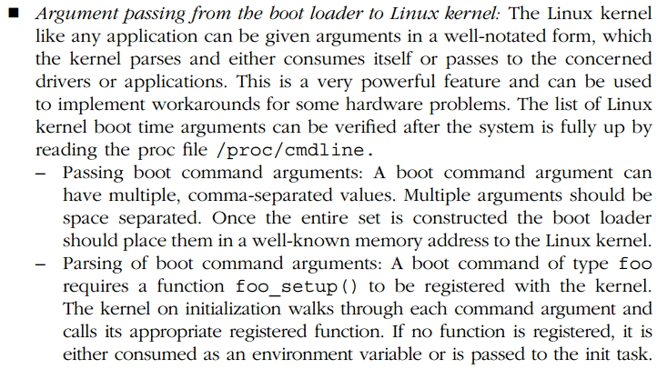
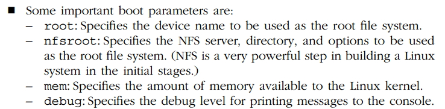
From VirtualBox Arch Linux I found following informations.
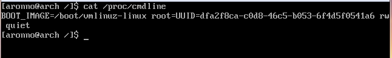
Some architechtures also passes the memory map to the kernel :

Memory Map.